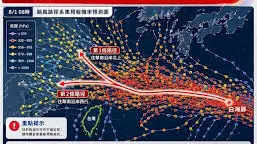
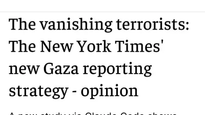
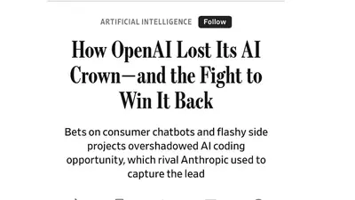

Sheryl Weikal says Prosecute ICE
@leftistlawyer.com
· 08/01 04:09· 命中「Claude AI」
An AI told the Jerusalem Post that the New York Times is Hamas

9 2000+ 次搜尋 生活2026.07.31
生活2026.07.31
 產經2026.07.31
產經2026.07.31
 時事2026.07.31
時事2026.07.31
 娛樂2026.07.31
娛樂2026.07.31
 永續溫度計2026.07.30
永續溫度計2026.07.30
 時事2026.07.30
時事2026.07.30
 時事2026.07.30
時事2026.07.30
Social Lab（OpView 社群口碑資料庫）每週彙整各平台熱門事件。榜上的數據以圖表呈現， 這裡列出每週彙整的標題與觀測期間，點進去看完整排行。
 PTT
PTT
 Facebook
Facebook
Bluesky 的全站熱門話題，以英語圈的娛樂、體育、政治為主，僅供參考。
以 30 小時內、依讚數與轉發數排序，已過濾掉 AI 繪圖標籤與明顯洗版內容。
An AI told the Jerusalem Post that the New York Times is Hamas

Per UBS, OpenAI and Anthropic will account for 27% of Google Cloud's 2026 revenue and more than 48% of 2027's. Investors are being sold a story about diverse AI demand that is simply not true - hyperscalers spent a trillion dollars to feed money back to themselves and pretend it's real growth.
I stood with local and state elected officials to say that we cannot approve any more AI data centers until we have federal guardrails to protect local communities like Saline Township from being run over by the likes of DTE, Oracle, and OpenAI.
This was meant to be due when OpenAI ipo’d or hit AGI, neither of which happened. Suggests OpenAI is burning way too much money and Amazon is trying to post another net equity gain in Q3, likely to try and paper over what was weak revenue guidance
** As it's being discoursed: I do not use any generative AI (ChatGPT, Claude et. al.) at any stage in my writing process. I write because I enjoy writing. I enjoy the challenge of expressing an idea, or character, or setting in such short form and tell a story with them. It's all human made. **
WSJ: “.. OpenAI might now wait until next year to go public, people with knowledge of the plans said .. “.. Some of OpenAI’s largest investors have privately expressed concerns in recent months about the startup’s high cash burn relative to its growth ..” @wsj.com www.wsj.com/tech/ai/how-...

Talking to an LLM isn't a slot machine, you get money from those things and sometimes it plays a clip from sex and the city or austin powers.
What I feel when I even *consider* using an LLM is best described as… revulsion?
Can't believe an LLM ate Hank Green
I said this a while ago but a lot of LLM use by people feels like watching people unwittingly acquire drug addictions
I think the dumbest pro-Ai opinion I read today was "I really don't like reading other people's Ai writing. I'm like, why would I read someone else's when I can just have my agent write my own?" and I'm like "Buddy, you've ALMOST got it."
its just funny to me seeing people succumb to ai psychosis when i spend hours a day with my personalized agent and all that happened is learning im a golden god, forged from salt and smoke and sent by xylzan the destroyer from the 7th dimension to usher in the age of silver angels
a playable Gemini?? not really! but here's my contribution to the amazing #oc_tcg_collab! this was seriously so fun! 🎧